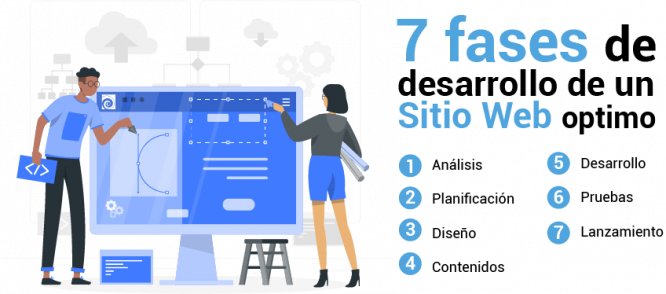

Wendy Cortez
FASES DEL DESARROLLO DE SOFTWARE
* En esta fase se debe identificar el proposito del sitio web, los objetivos y el público al que irá dirigido.
* Es importante definir el mapa del sitio, para dimensionar la magnitud y el alcance del proyecto que se va a realizar, también nos permite crear la estructura y las tecnologías que debemos utilizar para nuestra página web.
* Durante esta etapa debemos concentrarnos en el diseño visual del sitio, que tenga una comunicación clara, colores que representen la marca o producto. Es importante centrarce en la utilización de los principios de la usabilidad (facilidad de uso para el usuario) ,UI (interfaz de usuario) y UX (experiencia del usuario), estos permiten que ademas del diseño gráfico, el sitio web sea funcional y más efectivo.
* En esta etapa debemos concentrarnos en la redacción de textos correctamente, inclusión de imágenes, videos con optimización para la web y la optimización para motores de búsqueda (SEO). Los contenidos son la materia prima de nuestro proyecto, de estos depende en gran parte el éxito porque al fin y al cabo es lo que nuestros usuarios utilizarán.
* En este punto se desarrolla el sitio utilizando lenguajes de programación como HTML, CSS, PHP y bases de datos. También es importante aspectos funcionales como el diseño adaptativo (responsive size), esto permitirá tener compatibilidad con dispositivos móviles y llegar a una mayor cantidad de usuarios.
* Se deben realizar pruebas técnicas para el funcionamiento adecuado de la página web, se revisa la compatibilidad con los navegadores web y muy importante revisar si el sitio web cumple con el propósito que se plantea en los objetivos iniciales.
* Una vez se publique el sitio web en internet para el público, se debe realizar un monitoreo constante para evitar fallas técnicas o realizar algún ajuste. También es necesario el mantenimiento del sitio web no solo en temas técnicos sino en actualización de contenidos.